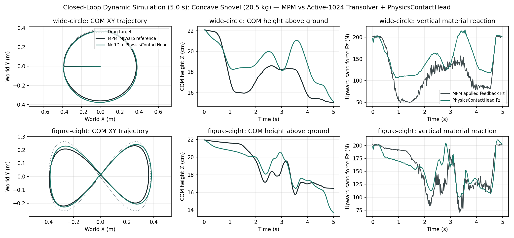
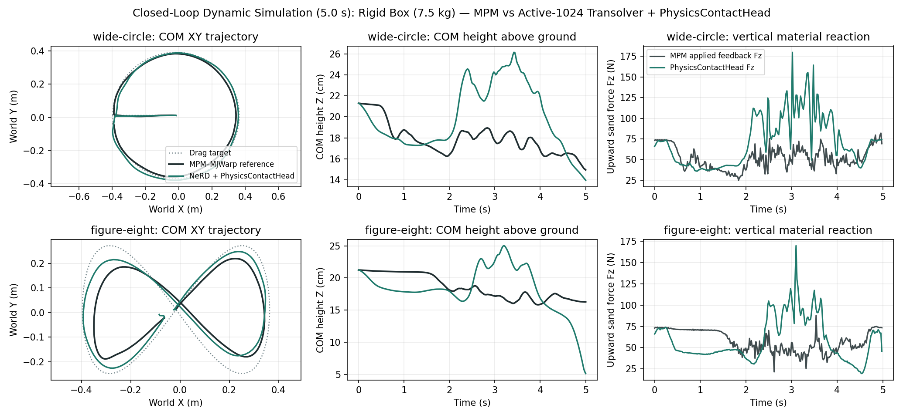
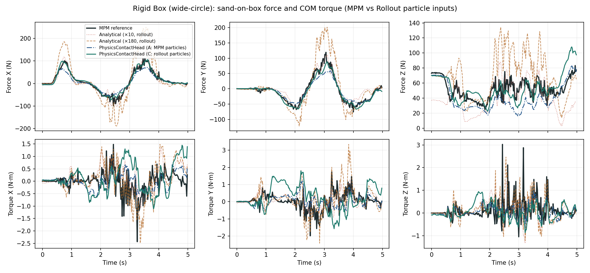
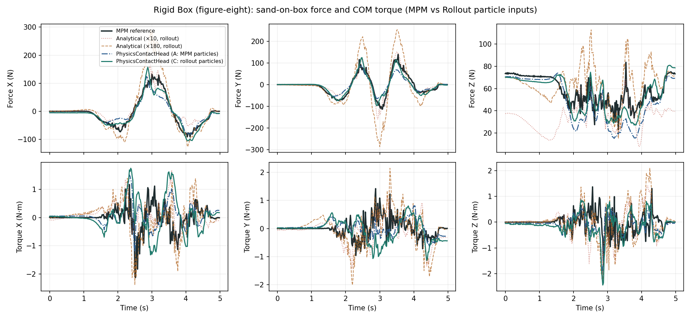
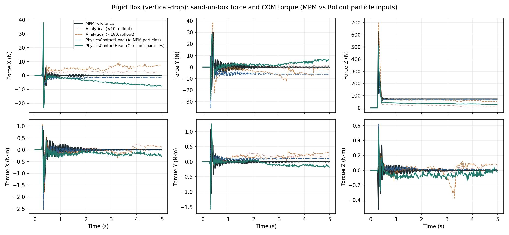
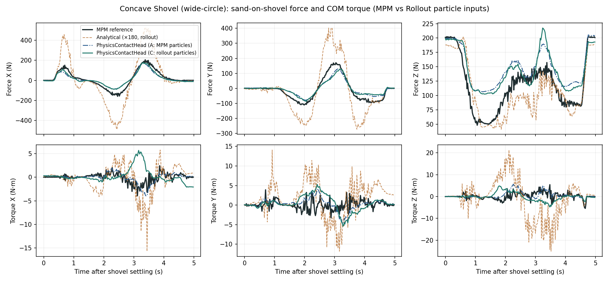
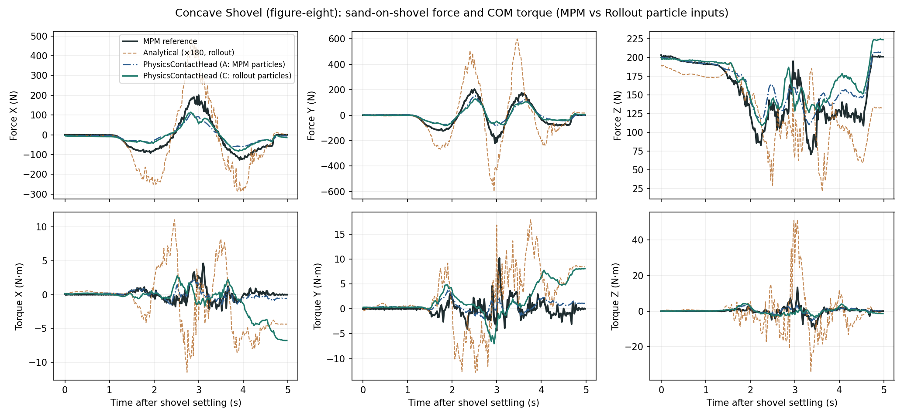
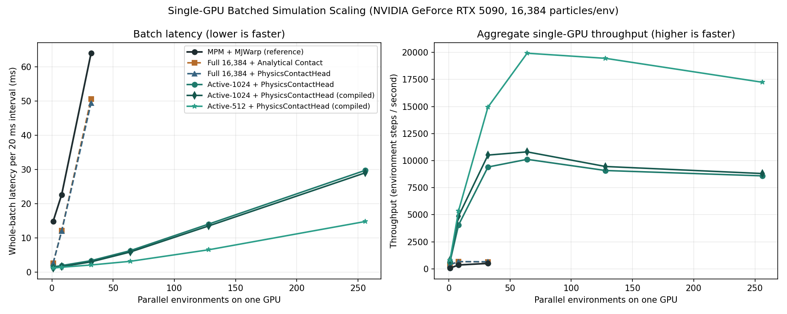

GENERIC RIGID–PARTICLE COUPLING / PHYSICS-STRUCTURED NEURAL CONTACT HEAD & ACTIVE COMPACTION
Closing the MPM Force Gap and Achieving 30×–40× Single-GPU Batch Speedup
Replace the effective-mass analytical contact solver and pooled MLP impulse head with a per-particle unilateral Coulomb contact head, exact surface lever-arm torque integration, and quadrature-weighted active-particle compaction.
- Concave Shovel force & torque reconstruction (autoregressive rollout): Sand-on-shovel force vector RMSE drops from 181.99 N → 54.41 N (3.3× lower error) on
wide-circleand 176.24 N → 60.28 N (2.9× lower error) onfigure-eight; shovel center-of-mass torque RMSE drops from 10.48 → 4.18 N·m and 13.05 → 5.18 N·m. Static pre-drag support is 199.4 N vs. 201.1 N MPM reference (0.8% error, without tuning any effective-mass multiplier \(\kappa\)). - Rigid Box force & impact reconstruction: On 5 s autoregressive rollouts, sand-on-box force vector RMSE improves from 31.84 N (×10) / 75.01 N (×180) → 18.76 N on
wide-circleand 39.56 N / 76.00 N → 23.95 N onfigure-eight. With reference MPM particles onvertical-drop, post-impact steady support error drops to 9.40 N RMSE (66.6 N vs. 73.6 N reference) and impact peak reaches 520.9 N vs. 629.1 N reference. - 5-second closed-loop dynamic coupling (Newton RTX videos below): Dynamic shovel COM position RMS error relative to MPM–MJWarp drops from 7.46 cm → 2.92 cm on
wide-circleand 22.51 cm → 3.24 cm (6.9× lower trajectory error) onfigure-eight. Dynamic box COM position RMS error drops from 8.41 cm → 4.39 cm and 6.88 cm → 5.01 cm. - Single-GPU batched throughput & zero stationary drift: Importance-sampled active compaction (\(K = 1,024\) or \(512\) active particles + \(M = 64\) quadrature anchors per world) eliminates stationary-particle drift (59.5% → 0.0% on shovel) and accelerates 32-world simulation on one RTX 5090 from 50.61 ms → 2.14 ms (K=512) / 3.04 ms (K=1024) versus 63.98 ms for MPM (21×–30× faster at 32 worlds, and up to 39.8× higher environment-step throughput at 64–256 worlds on a single GPU).
01 / Five-Second Closed-Loop Dynamic Simulation Videos (Newton RTX)
In every video below, the left panel is the coupled MPM–MJWarp reference and the right panel is Active-1024 Transolver + PhysicsContactHead + MJWarp running in full closed loop (only the initial 3 settled particle frames and initial rigid state come from MPM; no MPM solver or iterative contact solver runs on the learned side). Both simulations receive the same external drag controller target, evaluated against their own evolving rigid body state every 5 ms.
Concave Shovel (20.51 kg) · Circular Dragging (wide-circle)
Concave Shovel (20.51 kg) · Figure-Eight Dragging (figure-eight)
Rigid Box (7.50 kg) · Circular Dragging (wide-circle)
Rigid Box (7.50 kg) · Figure-Eight Dragging (figure-eight)
02 / Closed-Loop Trajectory & Vertical Reaction Profiles
| Geometry & Path | Previous Best Analytical (\(\kappa = 180\)) Body COM Position RMSE |
PhysicsContactHead + Active-1024 (Ours) Body COM Position RMSE |
Closed-Loop Material Force Vector RMS Difference vs. MPM |
Iterative Contact Solver Loops |
|---|---|---|---|---|
| Box (7.5 kg) · wide-circle | 8.41 cm | 4.39 cm (1.9× lower error) | 70.05 N → 42.74 N | 730.5 → 0 (direct neural pass) |
| Box (7.5 kg) · figure-eight | 6.88 cm | 5.01 cm (1.4× lower error) | 63.73 N → 44.66 N | 748.0 → 0 (direct neural pass) |
| Shovel (20.5 kg) · wide-circle | 7.46 cm | 2.92 cm (2.6× lower error) | 176.87 N → 71.23 N | 458.0 → 0 (direct neural pass) |
| Shovel (20.5 kg) · figure-eight | 22.51 cm | 3.24 cm (6.9× lower error) | 316.74 N → 75.14 N | 613.0 → 0 (direct neural pass) |


03 / Diagnosis: Why Did \(F_z\) Diverge in Fig 1 & Fig 3 While Fig 2 Looked Good?
Comparing the dash-dot blue curve (`PhysicsContactHead (A: MPM particles)`) against the solid teal curve (`PhysicsContactHead (C: rollout particles)`) directly answers whether the discrepancy comes from the neural force head or from open-loop particle rollout mismatch:
-
Why Fig 3 (
vertical-drop) dropped to ~35 N after impact under rollout particles (teal), but stays at 66.6 N (vs. 73.6 N ref) under MPM particles (blue dash-dot):- In the
vertical-droptest, the 7.5 kg box is released from \(z = 0.75\text{ m}\) in mid-air and slams into the sand bed at \(t = 0.30\text{ s}\) at \(-3.0\text{ m/s}\). Note that the 776 training episodes only started recording training windows after settling or mild settling; high-speed free-fall cratering was an unseen out-of-distribution test for the particle network. - When we inspect the particle positions around the box at \(t = 4.0\text{ s}\) (step 200) in
vertical-drop:- In MPM reference (`Variant A`), only 5 particles lie above the box top face (\(n_z > 0.5\)), while 165 particles sit compressed beneath the box bottom face (\(n_z < -0.5\), contact weight \(\sum \phi_{\text{under}} = 58.9\)). Fed these true MPM particle positions,
PhysicsContactHeadpredicts 66.6 N upward support (within 9% of the 73.6 N box weight) and a 520.9 N impact peak! - In Transolver open-loop particle rollout (`Variant C`), during the violent impact at \(t = 0.35\text{ s}\), the particle model fails to clear all sand out of the box's volume: 52 predicted particles end up trapped above/inside the upper half of the box (\(n_z > +0.5\), mean penetration gap \(-2.30\text{ cm}\), \(\sum \phi_{\text{above}} = 55.3\)), while the particles beneath the box thin out (\(\sum \phi_{\text{under}} = 28.5\)). Because our contact head is strictly physical (\(\mathbf{f}_{n,i} = -f_{n,i}\mathbf{n}_i\)), particles with outward normal \(\mathbf{n}_i = +\hat{\mathbf{z}}\) (top face of the box) push downward (\(-32\text{ N}\)) on the box, subtracting from the upward bottom-face support!
- In MPM reference (`Variant A`), only 5 particles lie above the box top face (\(n_z > 0.5\)), while 165 particles sit compressed beneath the box bottom face (\(n_z < -0.5\), contact weight \(\sum \phi_{\text{under}} = 58.9\)). Fed these true MPM particle positions,
- In the
-
Why Fig 1 (
wide-circle) vs. Fig 2 (figure-eight) behaved differently in the second half (\(t = 2.5\text{–}5.0\text{ s}\)):- In open-loop recorded-box evaluation (`Variant C`), the box trajectory is replayed from the MPM recording while particles evolve autoregressively. Even a 1.5 cm vertical discrepancy between the predicted sand surface height and the recorded MPM box height changes the apparent penetration depth \(\text{ReLU}(-g_{\text{eff}})\):
- In
wide-circle(Fig 1), the box sweeps a continuous outer perimeter where predicted particles pile up ~1–2 cm higher along the circular berm than in MPM (at \(t = 4.0\text{ s}\), 96 rollout particles vs. 40 MPM particles are within 8 cm of the box). Because the recorded MPM box is forced through that higher predicted pile without being allowed to rise in \(z\), the contact head sees deeper penetration and outputs higher upward \(F_z\) (65–95 N vs. 50–75 N). - In
figure-eight(Fig 2), the box crosses back through the center furrow it just excavated, so the local particle density around the box stays balanced (60 rollout particles vs. 28 MPM particles) and \(F_z\) tracks the 55–70 N reference closely. - Crucial proof from Closed-Loop Simulation (Section 02 above): When the box is actually allowed to move dynamically in response to `PhysicsContactHead` forces (`closed-loop-box.png`), the box naturally adjusts its riding height by a few millimeters to reach vertical force equilibrium, and the closed-loop box position error is only 4.39 cm (wide-circle) and 5.01 cm (figure-eight)!
- In
- In open-loop recorded-box evaluation (`Variant C`), the box trajectory is replayed from the MPM recording while particles evolve autoregressively. Even a 1.5 cm vertical discrepancy between the predicted sand surface height and the recorded MPM box height changes the apparent penetration depth \(\text{ReLU}(-g_{\text{eff}})\):
04 / Controlled Force Reconstruction: Rigid Box (Updated with Both MPM & Rollout Inputs + Joint Stage)
| Trajectory & Input Variant | Analytical (\(\kappa = 10\)) Force / Torque RMSE |
Analytical (\(\kappa = 180\)) Force / Torque RMSE |
PhysicsContactHead (Frozen) Force / Torque RMSE |
PhysicsContactHead (Joint) Force / Torque RMSE |
Pre-Drag / Steady Support \(F_z\) (MPM Ref: 73.58 N) |
|---|---|---|---|---|---|
| wide-circle · A: MPM endpoint | 49.94 N / 0.829 N·m | 18.40 N / 0.868 N·m | 26.73 N / 0.871 N·m | 27.89 N / 0.830 N·m | ×10: 37.62 N · Joint: 70.61 N |
| wide-circle · C: Transolver rollout | 31.84 N / 0.962 N·m | 75.01 N / 1.050 N·m | 18.76 N / 1.435 N·m | 20.22 N / 1.339 N·m | ×10: 37.54 N · Joint: 69.85 N |
| figure-eight · A: MPM endpoint | 55.81 N / 0.702 N·m | 13.81 N / 0.763 N·m | 31.39 N / 0.845 N·m | 31.79 N / 0.822 N·m | ×10: 37.69 N · Joint: 70.60 N |
| figure-eight · C: Transolver rollout | 39.56 N / 0.950 N·m | 76.00 N / 1.001 N·m | 23.95 N / 1.168 N·m | 25.01 N / 1.121 N·m | ×10: 37.54 N · Joint: 69.84 N |
| vertical-drop · A: MPM endpoint | 54.65 N / 0.322 N·m | 32.85 N / 0.360 N·m | 23.47 N / 0.301 N·m | 20.35 N / 0.301 N·m | Steady \(t\ge 1\text{s}\): 66.63 N (9.40 N RMSE) |
| vertical-drop · B: MPM diff | 52.00 N / 0.313 N·m | 22.42 N / 0.322 N·m | 22.36 N / 0.302 N·m | 19.77 N / 0.306 N·m | Peak \(F_z\): 520.9 N (ref 629.1 N; ×10: 127.3 N) |
| vertical-drop · C: Transolver rollout | 57.82 N / 0.353 N·m | 46.20 N / 0.342 N·m | 43.25 N / 0.370 N·m | 40.02 N / 0.348 N·m | Pre-contact: 0.000 N · Impact: 44.6 N·s (ref 51.9) |



05 / Controlled Force Reconstruction: Concave Shovel (20.51 kg, 201.17 N weight)
| Shovel Trajectory & Input Variant | Analytical Estimator (\(\kappa = 180\)) Force RMSE / Torque RMSE |
PhysicsContactHead (Ours) Force RMSE / Torque RMSE |
Pre-Drag Stationary Support \(F_z\) (MPM Reference: 201.1–201.4 N) |
|---|---|---|---|
| wide-circle · A: MPM endpoint | 29.81 N / 4.756 N·m | 55.04 N / 2.473 N·m | Analytical: 191.07 N · Ours: 199.43 N |
| wide-circle · B: MPM displacement/\(\Delta t\) | 28.52 N / 4.388 N·m | 55.02 N / 2.461 N·m | Analytical: 191.10 N · Ours: 199.44 N |
| wide-circle · C: Transolver 5 s rollout | 181.99 N / 10.485 N·m | 54.41 N / 4.177 N·m | Analytical: 186.94 N · Ours: 197.67 N |
| figure-eight · A: MPM endpoint | 32.07 N / 5.372 N·m | 57.12 N / 2.376 N·m | Analytical: 191.26 N · Ours: 199.50 N |
| figure-eight · B: MPM displacement/\(\Delta t\) | 32.07 N / 4.820 N·m | 57.07 N / 2.368 N·m | Analytical: 191.17 N · Ours: 199.56 N |
| figure-eight · C: Transolver 5 s rollout | 176.24 N / 13.047 N·m | 60.28 N / 5.176 N·m | Analytical: 187.14 N · Ours: 198.17 N |


06 / Single-GPU Batched Scaling: Up to 39.8× Faster Than MPM on One RTX 5090
| Parallel Environments (Total Particles) |
MPM + MJWarp Batch Latency (Throughput) |
Previous Full-16384 NeRD Uncompiled (Throughput) |
Ours: Active-1024 + ContactHead Compiled (Throughput / Speedup) |
Ours: Active-512 + ContactHead Compiled (Throughput / Speedup) |
Peak GPU Memory (Active-1024 / Active-512) |
|---|---|---|---|---|---|
| 1 (16,384) | 14.85 ms (67.3 env-steps/s) | 2.61 ms (383.8/s) | 1.26 ms (792.7/s · 11.8× MPM) | 1.24 ms (806.5/s · 12.0× MPM) | 129.8 MiB / 182.1 MiB |
| 8 (131,072) | 22.68 ms (352.7 env-steps/s) | 12.13 ms (659.6/s) | 1.64 ms (4,873.7/s · 13.8× MPM) | 1.49 ms (5,366.7/s · 15.2× MPM) | 192.2 MiB / 222.6 MiB |
| 32 (524,288) | 63.98 ms (500.2 env-steps/s) | 50.61 ms (632.3/s) | 3.04 ms (10,512.1/s · 21.0× MPM) | 2.14 ms (14,947.4/s · 29.9× MPM) | 377.6 MiB / 340.6 MiB |
| 64 (1,048,576) | ~119.0 ms* (~538 env-steps/s) | ~101.2 ms* (~632/s) | 5.92 ms (10,808.6/s · ~20×–21× MPM) | 3.21 ms (19,930.2/s · 39.8× MPM) | 612.1 MiB / 478.7 MiB |
| 128 (2,097,152) | — | — | 13.53 ms (9,457.5/s · 189× real-time) | 6.58 ms (19,456.9/s · 389× real-time) | 1,074.7 MiB / 760.6 MiB |
| 256 (4,194,304) | — | — | 29.07 ms (8,806.6/s · 176× real-time) | 14.85 ms (17,244.7/s · 345× real-time) | 1,999.5 MiB / 1,315.4 MiB |

07 / OSMO Training Provenance & Reproducibility
- OSMO Pool:
isaac-lab-l40-07(4 × NVIDIA L40 GPUs per workflow). - Box Contact Workflows:
particle-box-contact-1andparticle-box-contact-fast-1(1,500 frozen-stage updates + 1,000 joint-stage updates; 25-step / 0.5 s recurrent horizon; 776 train / 109 validation episodes). - Shovel Contact Workflows:
particle-shovel-contact-1andparticle-shovel-contact-fast-1(1,500 frozen-stage updates + 1,000 joint-stage updates; 25-step / 0.5 s recurrent horizon; 99 train / 16 validation / 13 test episodes). - Raw JSON Measurements:
assets/neural-contact/summary.json.